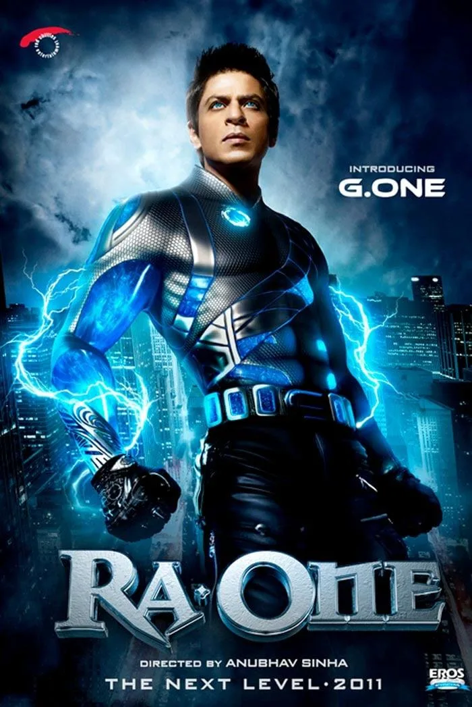
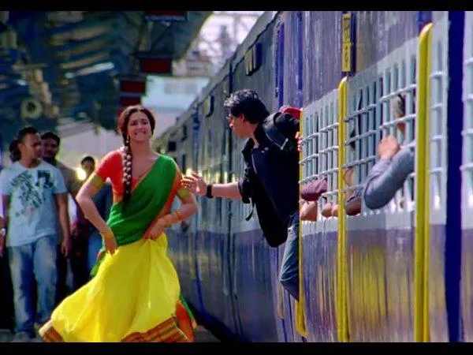
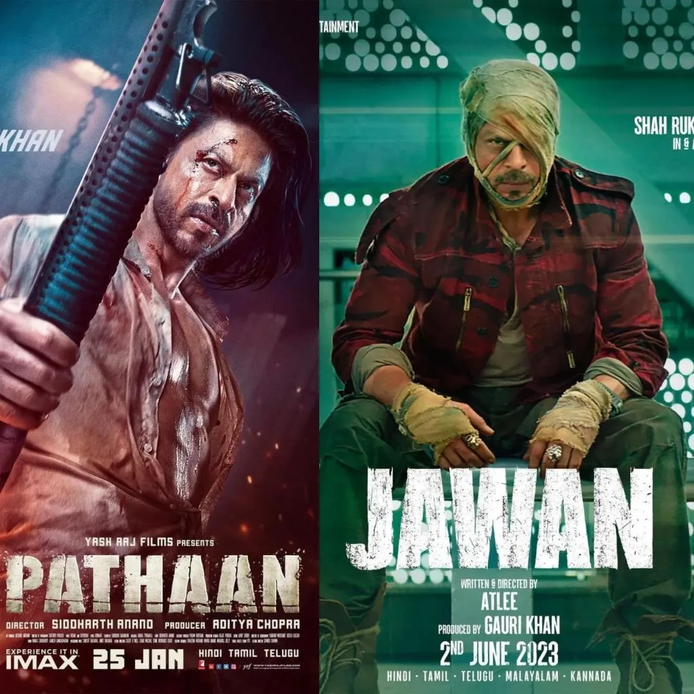
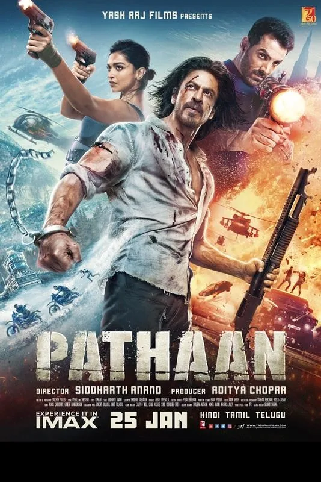
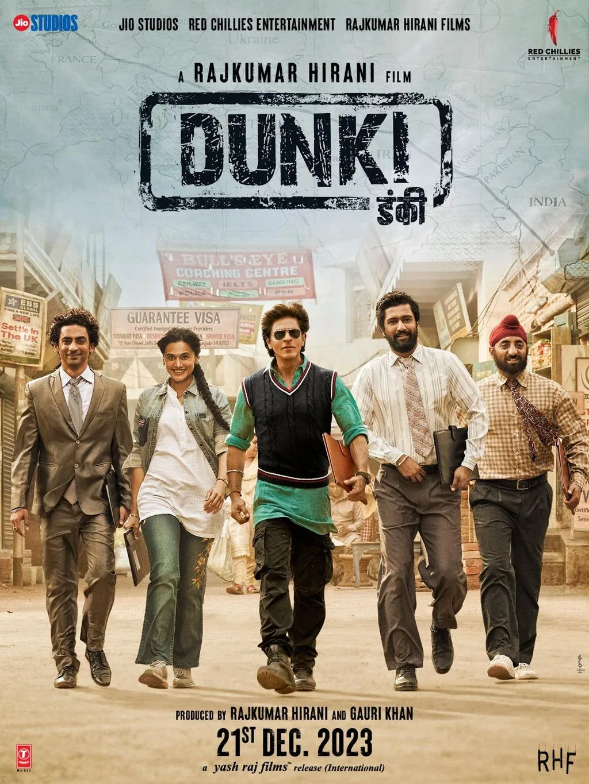

The Final Thesis · section 53 of 92
FROM ZERO TO KING
THE KINGDOM NOBODY BUILT



6
One superstar. Two groundbreaking digital experiments. A decade of questions. One Royal Flush.
THE OPENING HAS TO PUNCH
In 2011, Shah Rukh Khan didn't just release a movie.
He tried to change the rules of the game.
Ra.One wasn't merely a film with a website, a few tweets, and some celebrity endorsements. It was an attempt to build an entertainment universe around a Bollywood blockbuster — games, merchandise, comics, characters, technology, brands, and a digital world that could live beyond the cinema screen.
In 2013, Chennai Express took the experiment further.
More than 750,000 tweets. More than one billion reported cumulative tweet impressions. Fan clubs, games, apps, analytics, brand partnerships, and an audience that wasn't just watching the campaign.
It was helping power it.
Let that sink in.
THIS WAS 2013.
Before today's AI content factories. Before the creator economy became an industry buzzword. Before everyone started telling brands to build communities instead of audiences.
The blueprint was already being tested.
And then came the question that refuses to go away:
WHERE DID THE KINGDOM GO?
Not Shah Rukh Khan. He never stopped being a global cultural force.
The kingdom.
The permanent digital universe. The fan-powered operating system. The platform where millions of people could create, collaborate, play, and belong — whether a film was releasing or not.
How did an industry that had already seen the possibilities of fan-powered entertainment continue to build campaign after campaign, release after release, without making that larger ambition the obvious next chapter?
That is the mystery at the heart of this study.
Not a mystery about a celebrity's private life.
A mystery about an industry.
And a business opportunity hiding in plain sight.
THEN THE WORLD WENT SILENT. OR DID IT?
October 2021.
It was the day after Aryan Khan's arrest.
And outside Mannat, she remembers something that hit harder than any headline.
Silence.
Not a claim that nobody cared. Not a claim that no fans ever stood by Shah Rukh Khan. A deeply personal recollection of one moment, and the question it left behind.
If not for Shah Rukh Khan, then for whom will the largest democracy of the world stand behind?
That question belongs in the article. Not buried in a methodology section. Not wrapped in academic language.
Because this is where the marketing story becomes human.
For years, the industry had become brilliant at mobilising fans when there was a film to sell.
But what is a community?
Is it the number of people who retweet a trailer?
The number of fans who buy merchandise?
The number of followers an account accumulates?
Or is there something deeper — something that cannot be measured in impressions, engagement rates, or box-office collections?
And it brought a devastating question into focus:
HAD WE BUILT A FAN BASE — OR HAD WE BUILT A COMMUNITY?
One can be activated by a campaign.
The other has a life of its own.
That distinction could change how the entire entertainment industry thinks about fandom.
AND THEN THE KING CAME BACK.



5
Pathaan.
Jawan.
Dunki.
Three films. More than ₹2,600 crore in reported combined worldwide box-office collections.
The comeback was not a comeback. It was a cultural event.
The brands came back. The stadiums came into view. The business footprint expanded. The King was back on the screen — and increasingly visible across multiple commercial worlds.
But here is the question that separates a fan from a strategist:
DID THE DIGITAL REVOLUTION COME BACK WITH HIM?
The campaigns certainly did. The audience was there. The platforms were there. The brands were there.
But where was the permanent ecosystem?
Where was the place where a fan in Mumbai, a fan in Los Angeles, a fan in London, and a fan in a small town in India could all become participants in the same evolving entertainment universe?
Where was the digital kingdom that could keep growing even when the King wasn't releasing a film?
That is the unfinished chapter.
And now the story gets even more interesting.